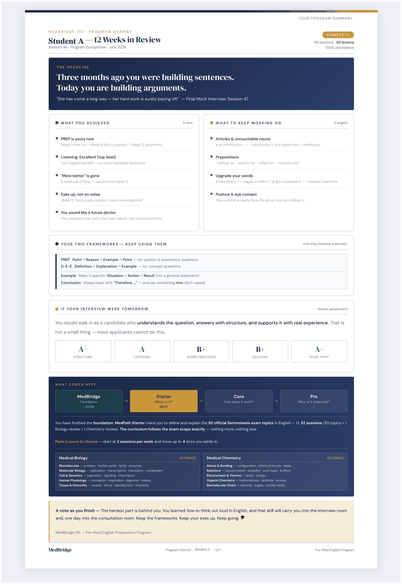
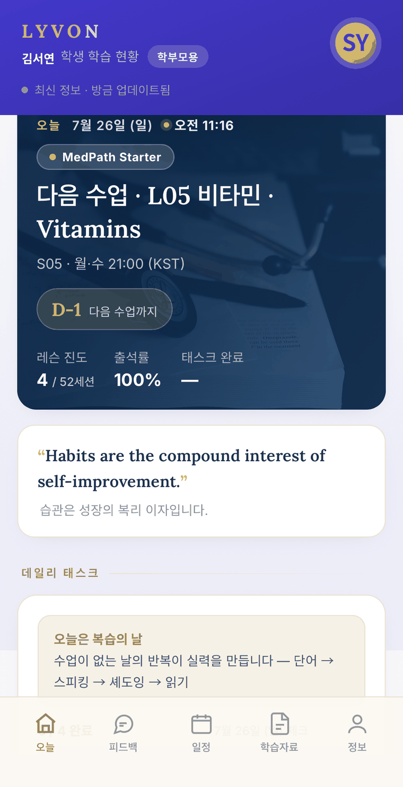
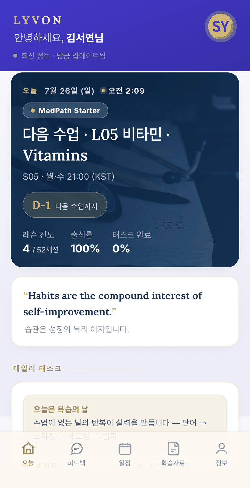
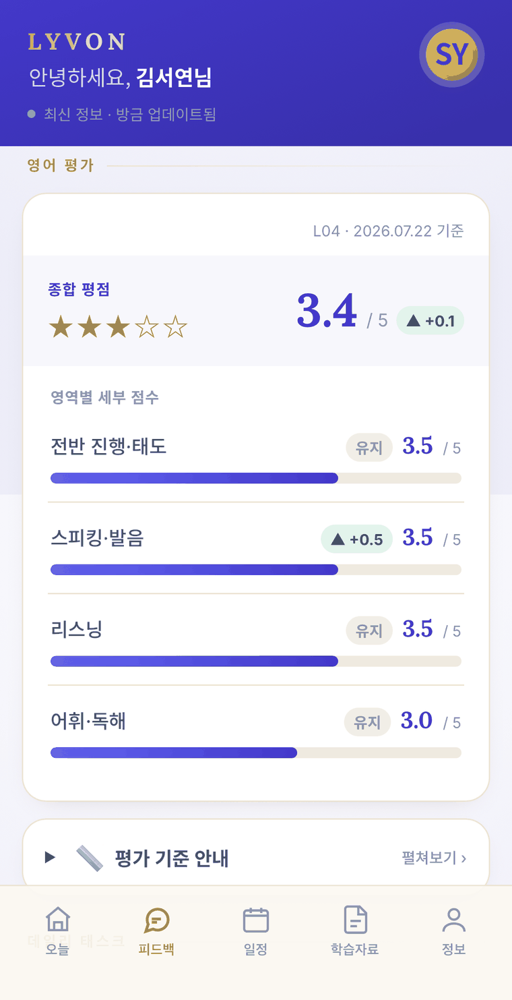
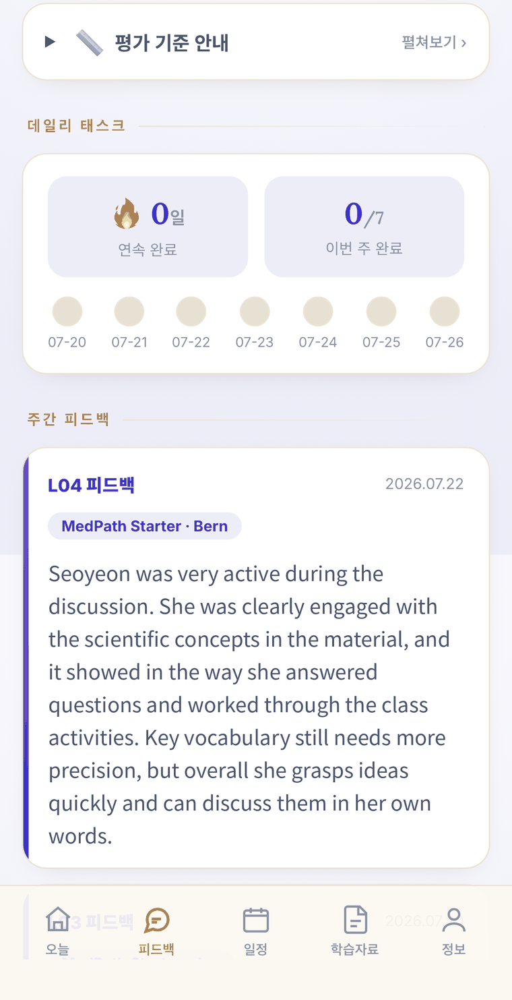
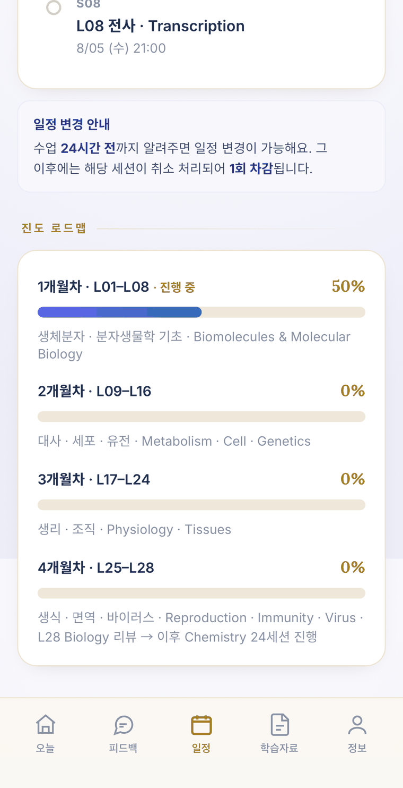

LYVON
PROGRAMS
LLR
DASHBOARD
WHY LYVON
FAQ
CONTACT
KO
EN
JA
THE ONE LYVON GLOBAL EDUCATIONAL ECOSYSTEM
LYVON
✓
LYVON
GLOBAL EDUCATIONAL ECOSYSTEM
SCROLL
CATEGORY
LYVON
THE ORAL EXAM
01
PRONUNCIATION
02
FLUENCY
03
VOCABULARY
04
DELIVERY
PROBLEM & SOLUTION
01
02
03
04
THE LYVON SOLUTION
DEFINE
→
EXPLAIN
→
JUSTIFY
ABOUT LYVON
L = T − V
·
δ∫L dt = 0
·
EVERYONE HAS A V
12
80
150
1:1
HUNGARIAN MEDICAL & VETERINARY UNIVERSITIES
Semmelweis University
University of Debrecen
University of Szeged
University of Pécs
Univ. of Veterinary Medicine Budapest
PROGRAMS
FOUNDATION
MedBridge
medbridgeedu.io
→
ADMISSIONS · 3 TIER
MedPath
medpathglobal.io
→
MEMBERSHIP
MedConnect
lyvon.io/medconnect
→
EVIDENCE OF PROGRESS
PROGRESS
SPEAKING
LISTENING
VOCABULARY
CORRECTIONS
ACTUAL REPORT · SAMPLE

THE DASHBOARD
STUDENT ACCOUNT
PARENT ACCOUNT

PARENT

STUDENT

STUDENT

STUDENT

STUDENT
01
02
03
04
05
06
LYVON ROADMAP
MedBridge
MedPath
MedConnect
WHY LYVON
01
02
03
INVESTMENT
LYVON · 12M
VOICES
PROCESS
01
02
03
04
FAQ
CONTACT US
Google Forms ↗
open.kakao.com ↗
Google Drive ↗